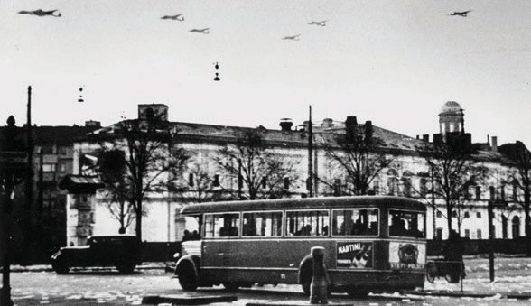
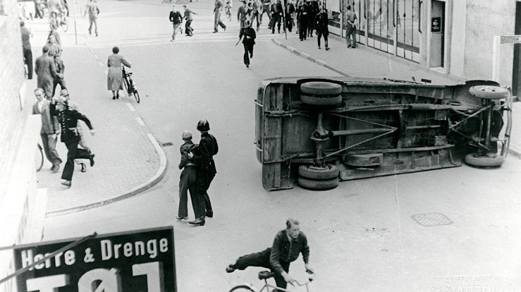
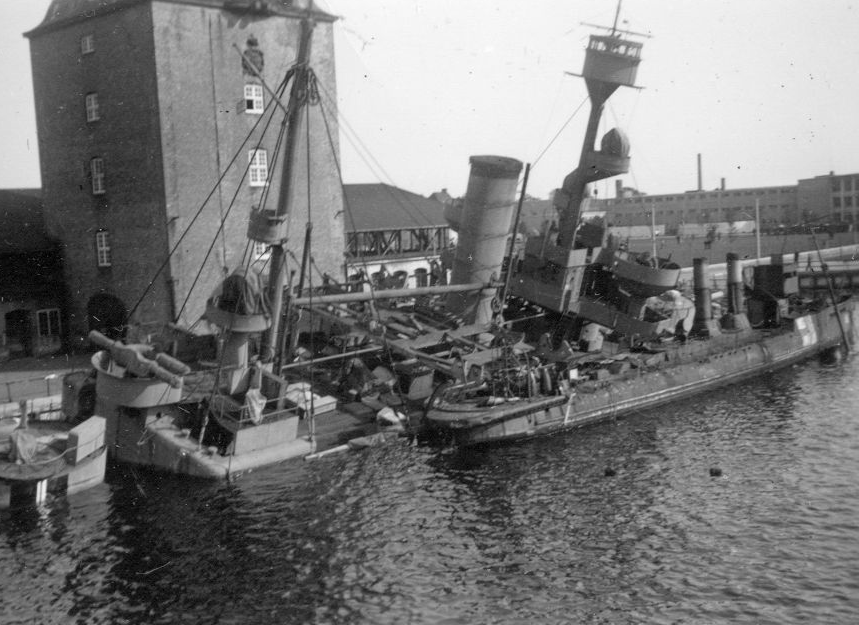
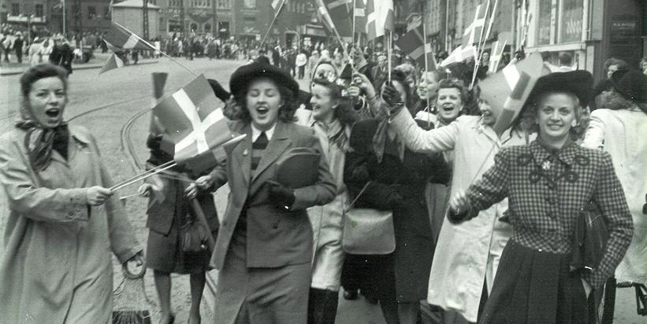

1.10 – DANMARK BESAT AF TYSKLAND (1940-45)
sidde 38
Tyskland (1940-45)
Hitlers angreb på Polen i september 1939 medførte, at Stor britannien og Frankrig erklærede Tyskland krig. Dermed var 2. Verdenskrig brudt ud i Europa. Danmark var besat af Tyskland fra 1940 indtil krigens afslutning i 1945. Danmark samarbej dede med tyskerne for at mildne besættelsesvilkårene, men under krigen voksede en dansk modstandsbevægelse frem. Samtidig lykkedes det for Danmark at redde langt de fleste af landets jøder fra Nazi-Tysklands folkemord, Holocaust.
BESÆTTELSE OG SAMARBEJDE
Danmark og Norge blev angrebet og besat af det tyske militær den 9. april 1940. Den tyske forklaring var, at Tyskland ville beskytte de to lande mod britisk besæt telse. Men Tysklands besættelse af Danmark skyldtes især, at man var interes seret i Norge. Den tyske krigsførelse var afhængig af leverancer af jernmalm fra Nordsverige, som skulle udskibes gennem byen Narvik på den isfri, norske atlanterhavskyst. Den forsyning af råvarer havde briterne også vist interesse for.
Desuden ønskede Tyskland sin adgang til verdenshavene sikret via Norges langstrakte kyst. Da Danmark er det land, som ligger mellem Norge og Tysk land, havde tyskerne brug for at have adgang til flyvepladsen i Aalborg som mellemstation. Endeligt gjorde Danmarks placering ved Nordsøen landet til en uundværlig del af det tyske forsvarsværk mod en eventuel allieret invasion af den europæiske vestkyst.Tyske fly over København den 9. april
Tyske fly over København den 9. april 1940.
Læremateriale Til Indfødsretsprøven

sidde 39
Tidligt om morgenen den 9. april blev angrebet indledt, da tyske tropper gik over grænsen i Sønderjylland. Danmarks militære modstand mod angrebet var ubetydelig og varede kun i ganske få timer. Det betød, at kun få danske soldater mistede livet i forbindelse med angrebet. Tysklands militære magt var så stor, at regeringen ikke mente, at det ville nytte fortsat at gøre modstand.
Tyskland krævede, at Danmark skulle samarbejde med besættelsesmagten. Det gik Danmark nødtvungent ind på. Den danske regering blev ikke afsat, men fort satte som samlingsregering under socialdemokratisk ledelse, dog under tysk kontrol. Også kongen fortsatte som regent. Formelt set bevarede Danmark sin status som suveræn, neutral stat, selv om landet var besat af tyske tropper. Og for de fleste danskere fortsatte – i hvert fald de første år af besættelsen – livet stort set uden de store forandringer.
Den 10. maj 1940 – en måned efter den danske overgivelse – blev også Frankrig invaderet af Tyskland, som besejrede de franske styrker på mindre end seks uger. Dermed stod Storbritannien næsten alene tilbage i kampen mod Hitler, og en allieret sejr syntes langt borte.
Men den tyske krigsførelse fik stigende problemer, som årene gik, og flere og flere begyndte at tro på en allieret sejr. Afgørende i denne sammenhæng blev to begivenheder i 1941. Det var Tysklands invasion (’Operation Barbarossa’) af Sovjetunionen den 22. juni, og da Japan, som var på Tysklands side i krigen, bombede den amerikanske flåde i Pearl Harbor på Hawaii i Stillehavet den 7. december. Dermed blev både Sovjetunionen og USA trukket ind i krigen på alli eret side, og Tyskland havde således fået for mange og for stærke fjender til, at det på lang sigt var muligt at vinde krigen.
I de første år af besættelsen var der nogenlunde ro i Danmark på trods af krigen, men fra 1942 begyndte danskernes modstand mod den tyske tilstedeværelse i landet at vokse.
Tyskerne mente hverken, at den danske regering gjorde nok for at slå denne modstand ned eller i øvrigt bidrog til at sikre tyske interesser i landet. Efter en større krise i det dansk-tyske forhold i oktober 1942 blev der efter tysk krav dannet en ny regering under ledelse af Erik Scavenius, der var tidligere uden rigsminister og en kraftig fortaler for samarbejdspolitikken med Tyskland.
I august 1943, hvor det stod mere og mere klart, at Tyskland ville tabe krigen, kom der imidlertid store strejker i flere danske byer som følge af stadig hårdere tyske krav. Den 29. august 1943 besluttede regeringen at indgive sin afskeds begæring til kongen, efter at Scavenius havde afvist tyskernes krav om at gribe aktivt ind mod strejkerne og den stadigt voksende modstand mod den tyske besættelse, herunder det tyske krav om dødsstraf for sabotage. Dermed slut tede den danske regerings samarbejdspolitik med Nazi-Tyskland. Den tyske besættelsesmagt opløste samtidig det danske militær.
Læremateriale Til Indfødsretsprøven
sidde 40
Uroligheder i Odense i august 1943. Foto: Nationalmuseet.
Uroligheder i Odense i august 1943. Foto: Nationalmuseet.
Den danske flåde sænkede selv hovedparten af sine skibe i 1943, for at de ikke skulle falde i tyske hænder. Derefter havde Danmark reelt ingen regering, selv om kongen havde nægtet at modtage regeringens afskedsbegæring. I praksis blev landet derefter styret af departementscheferne, det vil sige ministeriernes øverste administrative chefer. De videreførte i et vist omfang, og mere uformelt, koordinationen med den tyske besættelsesmagt for at beskytte befolkningen mest muligt på trods af den nye og mere alvorlige situation i landet.Sænkning af krigsskibet
Sænkning af krigsskibet Peder Skram i 1943. Foto: Nationalmuseet.
Læremateriale Til Indfødsretsprøven


sidde 41
REDNINGEN AF DE DANSKE JØDER
I 1940 levede der cirka 8.000 jøder i Danmark. Mere end 7.000 af dem nåede at flygte fra nazisternes forfølgelser under besættelsen. De fleste blev hjulpet til Sverige af danske medborgere, lige inden tyskerne i oktober 1943 forsøgte at anholde de danske jøder. Op mod 500 danske jøder blev dog sendt til koncen trationslejre i Tyskland, hvor mange omkom. I europæisk målestok overlevede en meget stor andel af de danske jøder dog dette folkemord, som også kendes under navnet Holocaust. I alt myrdede Nazi-Tyskland seks millioner af Europas cirka ni-ti millioner jøder under krigen – de fleste ved masseskydninger eller i gaskamre i udryddelseslejre.
ISLAND BLIVER SELVSTÆNDIGT
I 1944 løsrev Island sig endegyldigt efter 564 år under Danmark. I anden halvdel af 1800-tallet opstod der en stærk selvstændighedsbevægelse i Island, som i 1918 med den såkaldte Forbundslov havde fået udstrakt selvstyre i et forbund – en ”personalunion” – med Danmark. Det vil sige, at den danske konge også var konge i Island. Videre blev den islandske udenrigs- og forsvarspolitik varetaget af Danmark.
Under 2. Verdenskrig fik Islands geografiske placering midt i den nordlige del af Atlanterhavet stor betydning. Fly og skibe på vej fra USA til Europa kunne bruge øen som base. Storbritannien besatte derfor Island i maj 1940 for at forhindre en tysk invasion. Senere under krigen overtog USA forsvaret af det islandske område.
Forbundsloven i 1918 udløb i 1943, og Danmark, som var under tysk besættelse havde derfor ikke reel mulighed for at genforhandle den. Ved en folkeafstem ning besluttede en næsten enig islandsk befolkning sig for fuld selvstændighed. Republikken Island blev således udråbt den 17. juni 1944, som derfor blev Islands nationaldag.
MODSTAND OG BEFRIELSE
De sidste år af besættelsen var præget af flere og flere sabotageaktioner både mod det tyske militær i Danmark og mod de danskere, der samarbejdede med besættelsesmagten. Frihedsrådet blev oprettet i september 1943. Det var en illegal komité, hvor lederne fra de forskellige modstandsbevægelser koordine rede modstanden mod den tyske besættelsesmagt. En stor strejke i København i juli 1944 gav anledning til øget kontakt mellem modstandsbevægelse og poli tikere. Efter strejken samarbejdede Frihedsrådet og de danske politikere om at få Danmark anerkendt som allieret i kampen mod Tyskland. Det modsatte Sovjetunionen sig dog.
Læremateriale Til Indfødsretsprøven
sidde 42
I foråret 1945 kollapsede det nazistiske Tyskland efter hårde kampe i Europa. Den 5. maj blev Danmark officielt befriet af britiske styrker efter, at de tyske tropper havde overgivet sig. På Bornholm nægtede tyskerne dog at overgive sig. I besættelsens sidste dage blev øen derfor angrebet af sovjetiske styrker, som blev på øen frem til foråret 1946. I alt blev cirka 7.000 danskere dræbt under 2. Verdenskrig, heraf var mange søfolk, der sejlede i allieret krigstjeneste.Fejring af befrielsen
Fejring af befrielsen i København den 5. maj efter fem års tysk besættelse.
Danmark blev således ikke så hårdt ramt af 2. Verdenskrig som mange andre europæiske lande. 2. Verdenskrig er med cirka 60 millioner døde verden over den blodigste krig i verdenshistorien, og dødstallet var langt højere i næsten alle andre tysk besatte lande – for eksempel mistede Holland cirka 200.000 borgere, og i Østeuropa, hvor krigen var langt blodigere end i Vesteuropa, mistede Polen alene fem-seks millioner borgere.
De relativt lave dødstal og begrænsede ødelæggelser skyldes for det første den hurtige danske overgivelse i april 1940 og den efterfølgende samarbejdspolitik med tyskerne. For det andet skyldes det, at de tyske tropper i Danmark – bortset fra dem på Bornholm – overgav sig uden kamp ved krigens afslutning i 1945, allerede før de allierede styrker ankom til landet. Krigens væsentlige kamp handlinger mellem stormagterne nåede således aldrig til Danmark.
Der var dog knaphed på mange varer i Danmark. For at styre forbruget og for at kunne fordele de knappe forsyninger ud til alle indførtes såkaldt rationering på for eksempel benzin, gas, el, sukker, kaffe, te, mel, brød, sæbe, kød og smør. Det betød, at hver borger kun kunne købe en begrænset mængde af disse varer. Flere af vintrene under besættelsen var usædvanligt kolde med temperaturer ned til minus 30 grader, og manglen på brændsel (for eksempel olie og kul) gjorde det svært at opvarme boliger, skoler og arbejdspladser. Men i modsætning til mange andre lande var der dog aldrig sult i Danmark. Det politiske system overlevede også krigen. Modstandsbevægelsen fik en vis politisk indflydelse i tiden lige efter befrielsen, men de gamle politikere og partier vendte hurtigt tilbage til magten.
Læremateriale Til Indfødsretsprøven

Fonte: Læremateriale til Indfødsretsprøven, SIRI.